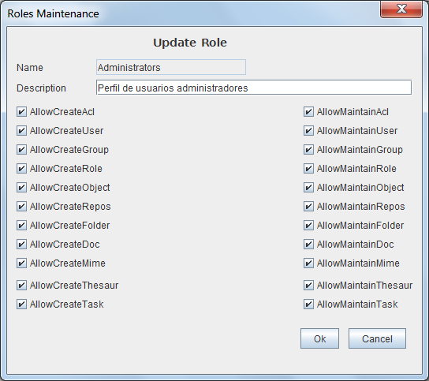

Roles Maintenance
When selected in the form Roles Listone of the options to add, delete, modify or copy the Role will appear this form with different fields on or off.
This form contains the information:
- Role Name:Identificador del Rol cuyo valor no puede repetirse ni cambiar una vez asignado. Puede tener una longitud máxima de 32 caracteres. (Ej. "Admin.Tipos Documentales", "Resp. Seguridad")
- Role Description: Descripción que permita interpretar el Rol. Puede tener una longitud máxima de 128 caracteres. (Ej.: "Documentalistas responsables administración Tipologías documentales", "Responsables de Seguridad encargados de mantenimiento de usuarios y Grupos")
- AllowCreateUser: Enables you to create a user but not to modify existing users
- AllowMaintainUser: Allows you to modify and delete users
- AllowCreateGroup: Enables you to create a group but not to modify existing groups
- AllowMaintainGroup: Allows you to modify and delete groups
- AllowCreateAcl: Enables you to create an ACL but not modify existing ACLs
- AllowMaintainAcl: Allows you to modify and delete ACL
- AllowCreateRole: Enables you to create a role but not modify existing roles
- AllowMaintainRole: Allows you to modify and delete roles
- AllowCreateObject: Enables you to create an object definition but not modify existing definitions
- AllowMaintainObject: Allows you to modify and delete the object definitions
- AllowCreateRepos: Enables you to create a repository but not modify existing repositories
- AllowMaintainRepos: Allows you to modify and delete repositories
- AllowCreateFolder: Enables you to create a folder but not to modify existing foldesr
- AllowMaintainFolder: Allows to modify and delete folders
- AllowCreateDoc: Enables you to create a document but not to modify existing documents
- AllowMaintainDoc: Allows you to modify and delete documents
- AllowCreateMime: Enables you to create a mime type but not modify existing mime types
- AllowMaintainMime: Allows you to modify and delete mime types
- AllowCreateAuth: Enables you to create an authentication system but not modify existing systems
- AllowMaintainAuth: Allows you to modify and delete authentication systems
- AllowCreateCustom: Enables you to create a user customization but not to modify existing ones
- AllowMaintainCustom: Allows you to modify and delete user customizations
- AllowCreateTask: Enables you to create a task but not to modify existing ones
- AllowMaintainTask: Allows you to modify and delete user Tasks

View: Roles List
Help Index OpenProdoc